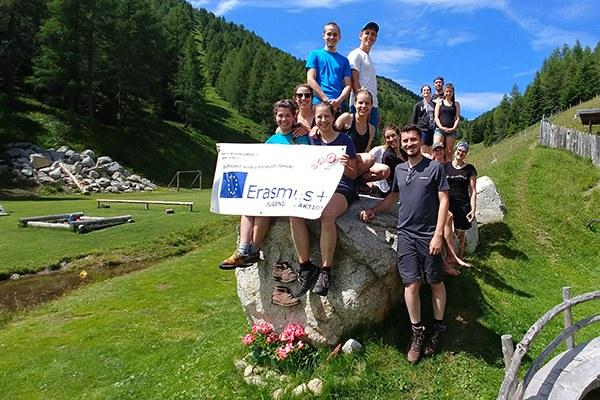
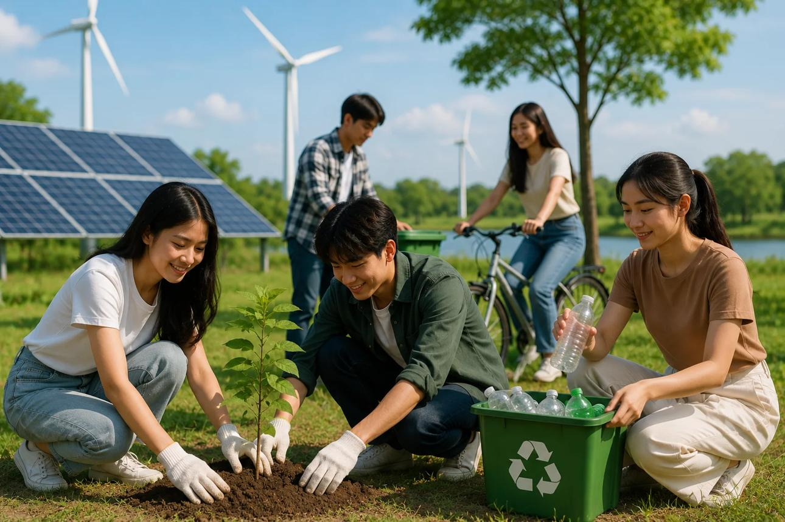
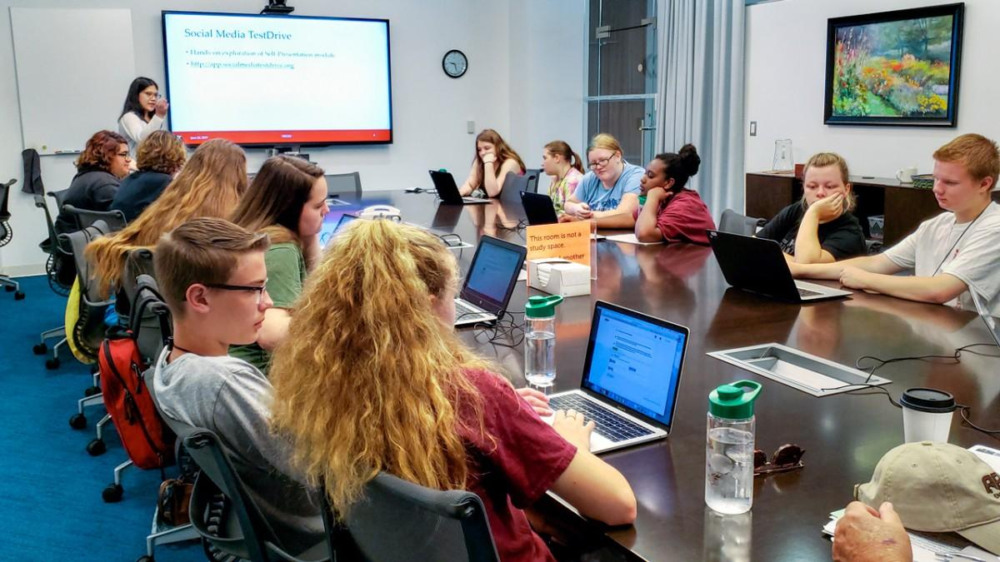
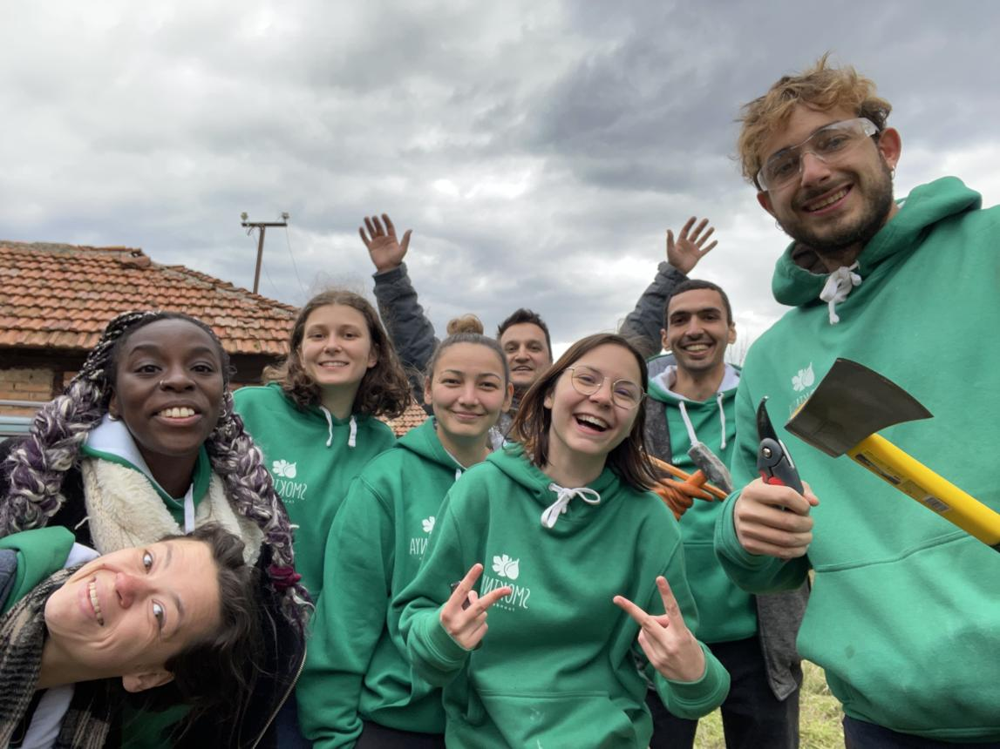

<!-- CSS -->
<link rel="stylesheet" href="../css/global.css">
<link rel="stylesheet" href="../css/projects.css">
<link rel="stylesheet" href="../css/responsive.css">

<link rel="preconnect" href="https://fonts.googleapis.com">
<link rel="preconnect" href="https://fonts.gstatic.com" crossorigin>
<link href="https://fonts.googleapis.com/css2?family=Poppins:wght@300;400;500;600;700;800&display=swap" rel="stylesheet">

<link rel="stylesheet" href="https://cdnjs.cloudflare.com/ajax/libs/font-awesome/6.7.2/css/all.min.css">


<!-- NAVBAR -->
<header>
    <nav class="navbar">

  <a href="../index.html" class="logo">

    <div class="logo-image">
        
    </div>

    <div class="logo-text">

        <span>
            YANKI </BR>Young Ambassadors for<br>
            Networking, Knowledge & Inclusion
        </span>

    </div>

</a>
        </a>

        <ul class="nav-links">
            <li><a href="../index.html">Ana Sayfa</a></li>
            <li><a href="about.html">Hakkımızda</a></li>
            <li><a href="projects.html" class="active">Projeler</a></li>
            <li><a href="blog.html">Blog</a></li>
            <li><a href="contact.html">İletişim</a></li>
        </ul>

        <a href="contact.html" class="join-btn">Bize Katıl</a>

    </nav>
</header>


<!-- HERO -->
<section class="page-hero">

    <div class="page-overlay"></div>

    <div class="page-content">

        <span>PROJELERİMİZ</span>

        <h1>Fikirleri Etkiye Dönüştürüyoruz</h1>

        <p>
            Gençlerin öğrenmesine, bağlantı kurmasına ve harekete geçmesine
            olanak sağlayan yeni projeler geliştiriyoruz.
        </p>

    </div>

</section>


<!-- INTRO -->
<section class="projects-intro">

    <div class="container">

        <p>
            YANKI olarak yolculuğumuza yeni başlıyoruz. Gençlerin ihtiyaçlarından,
            fikirlerinden ve deneyimlerinden ilham alarak kapsayıcılık,
            sürdürülebilirlik, dijital beceriler ve aktif vatandaşlık
            alanlarında yeni projeler geliştiriyoruz.
        </p>

    </div>

</section>


<!-- FOCUS AREAS -->
<section class="projects-section">

    <div class="container">

        <div class="section-heading">

            <span>ODAK ALANLARIMIZ</span>

            <h2>YANKI Neye Odaklanıyor?</h2>

            <p>
                Çalışmalarımızı gençlerin gelişimini ve topluma aktif katılımını
                destekleyen temel alanlar üzerine inşa ediyoruz.
            </p>

        </div>


        <div class="projects-grid">


            <!-- CARD 1 -->
            <div class="project-card">

                

                <div class="project-info">

                    <span class="tag">Uluslararası</span>

                    <h3>Uluslararası Gençlik Değişimleri</h3>

                    <p>
                        Farklı kültürlerden gençleri bir araya getirerek
                        kültürlerarası öğrenmeyi, iletişimi ve uluslararası
                        deneyimi destekliyoruz.
                    </p>

                </div>

            </div>


            <!-- CARD 2 -->
            <div class="project-card">

                

                <div class="project-info">

                    <span class="tag">Sürdürülebilirlik</span>

                    <h3>Sürdürülebilirlik ve Çevre</h3>

                    <p>
                        Gençlerin çevre konusunda farkındalık kazanmasını,
                        sürdürülebilir yaşam biçimlerini keşfetmesini ve
                        doğayla daha güçlü bir bağ kurmasını destekliyoruz.
                    </p>

                </div>

            </div>


            <!-- CARD 3 -->
            <div class="project-card">

                

                <div class="project-info">

                    <span class="tag">Dijital</span>

                    <h3>Dijital Beceriler ve Medya Okuryazarlığı</h3>

                    <p>
                        Gençlerin dijital dünyada daha bilinçli, yaratıcı ve
                        güvenli bir şekilde yer almalarını destekleyen fikirler
                        geliştiriyoruz.
                    </p>

                </div>

            </div>


            <!-- CARD 4 -->
            <div class="project-card">

                

                <div class="project-info">

                    <span class="tag">Kapsayıcılık</span>

                    <h3>Kapsayıcılık ve Gönüllülük</h3>

                    <p>
                        Farklı geçmişlerden gelen gençlerin kendilerini ifade
                        edebildiği, katılım sağlayabildiği ve birlikte
                        üretebildiği alanlar oluşturmayı hedefliyoruz.
                    </p>

                </div>

            </div>


        </div>

    </div>

</section>


<!-- OUR FIRST STEPS -->
<section class="upcoming-projects">

    <div class="container">

        <div class="section-heading">

            <span>İLK ADIMLARIMIZ</span>

            <h2>YANKI'nin Yolculuğu Yeni Başlıyor</h2>

            <p>
                Yeni bir gençlik girişimi olarak ilk projelerimizi geliştiriyor,
                yeni ortaklıklar kuruyor ve gençler için yeni fırsatlar
                oluşturuyoruz.
            </p>

        </div>


        <div class="upcoming-grid">


            <!-- STEP 1 -->
            <div class="upcoming-card">

                <div class="country">
                    <i class="fa-solid fa-users"></i>
                </div>

                <h3>Topluluğumuzu Oluşturuyoruz</h3>

                <p>
                    Gençleri bir araya getiriyor, ortak ilgi alanlarımızı
                    keşfediyor ve birlikte öğrenebileceğimiz bir topluluk
                    oluşturuyoruz.
                </p>

            </div>


            <!-- STEP 2 -->
            <div class="upcoming-card">

                <div class="country">
                    <i class="fa-solid fa-lightbulb"></i>
                </div>

                <h3>Yeni Fikirler Geliştiriyoruz</h3>

                <p>
                    Gençlik, sürdürülebilirlik, dijital beceriler ve
                    kapsayıcılık alanlarında yeni proje fikirleri
                    geliştiriyoruz.
                </p>

            </div>


            <!-- STEP 3 -->
            <div class="upcoming-card">

                <div class="country">
                    <i class="fa-solid fa-handshake"></i>
                </div>

                <h3>Uluslararası Bağlantılar Kuruyoruz</h3>

                <p>
                    Avrupa'daki gençlik kuruluşları ve ortaklarla yeni
                    iş birlikleri kurarak uluslararası projeler geliştirmeyi
                    hedefliyoruz.
                </p>

            </div>


        </div>

    </div>

</section>


<!-- EXPERIENCE -->
<section class="projects-section">

    <div class="container">

        <div class="section-heading">

            <span>DENEYİMİMİZ</span>

            <h2>YANKI'nin Temelindeki Deneyim</h2>

            <p>
                YANKI yeni kurulmuş bir girişim olsa da ekibimiz gençlik
                çalışmaları, gönüllülük ve uluslararası öğrenme deneyimlerinden
                besleniyor.
            </p>

        </div>


        <div class="projects-grid">


            <div class="project-card">

                <div class="project-info">

                    <span class="tag">Erasmus+</span>

                    <h3>Uluslararası Gençlik Deneyimleri</h3>

                    <p>
                        Farklı ülkelerden gençlerle bir araya gelerek
                        kültürlerarası öğrenme, takım çalışması ve
                        uluslararası iş birliği deneyimleri kazanıyoruz.
                    </p>

                </div>

            </div>


            <div class="project-card">

                <div class="project-info">

                    <span class="tag">Gönüllülük</span>

                    <h3>Yerel Gönüllülük Çalışmaları</h3>

                    <p>
                        Yerel topluluklarda dayanışmayı, gönüllülüğü ve
                        sosyal katılımı destekleyen çalışmalara katkı
                        sağlıyoruz.
                    </p>

                </div>

            </div>


            <div class="project-card">

                <div class="project-info">

                    <span class="tag">Gençlik</span>

                    <h3>Proje Geliştirme</h3>

                    <p>
                        Gençlerin ihtiyaçlarına yönelik fikirleri projelere
                        dönüştürmek ve sürdürülebilir iş birlikleri oluşturmak
                        için çalışıyoruz.
                    </p>

                </div>

            </div>


        </div>

    </div>

</section>


<!-- CTA -->
<section class="projects-cta">

    <div class="container">

        <h2>Bir Fikrin mi Var?</h2>

        <p>
            Bir gençlik projesi, atölye çalışması veya topluluk girişimi
            fikrin varsa bizimle paylaş. Bir sonraki projemiz senin fikrin
            olabilir.
        </p>

        <a href="contact.html" class="primary-btn">
            Fikrini Paylaş
        </a>

    </div>

</section>


<!-- FOOTER -->
<footer>

    <div class="container footer-container">


        <div class="footer-logo">

            <h2>YANKI</h2>

            <p>
                Young Ambassadors for Networking, Knowledge & Inclusion
            </p>

        </div>


        <div class="footer-links">

            <h3>Hızlı Ulaş</h3>

            <a href="../index.html">Ana Sayfa</a>

            <a href="about.html">Biz Kimiz?</a>

            <a href="projects.html">Projeler</a>

            <a href="blog.html">Blog</a>

            <a href="contact.html">İletişim</a>

        </div>


        <div class="footer-social">

            <h3>Bizi Takip Et!</h3>

            <div class="social-icons">

                <a href="https://www.instagram.com/yankiyouth/" target="_blank">
                    <i class="fab fa-instagram"></i>
                </a>

                <a href="https://www.facebook.com/profile.php?id=61592278315403" target="_blank">
                    <i class="fab fa-facebook"></i>
                </a>

            </div>

        </div>


    </div>


    <div class="copyright">

        <p>
            © 2026 YANKI. Tüm Hakları Saklıdır.
        </p>

    </div>

</footer>


<script src="../js/script.js"></script>